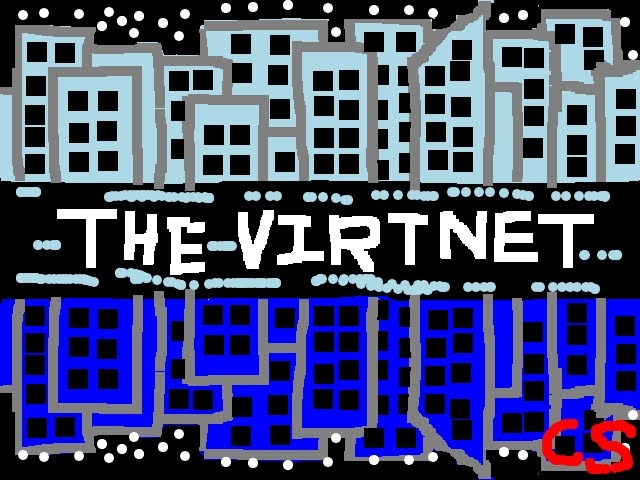
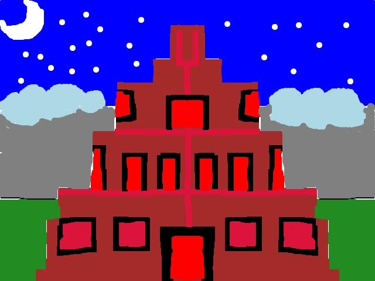
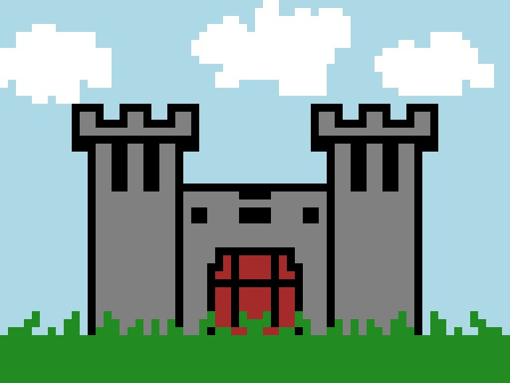

-
Clear Canvas
-
square
-
restricted
-
unlocked
- grid off
- small pixel
- random drawing: off
- pick background: off
- horizontal reflection: off
- vertical reflection: off
-
Download Art
-
Clear Canvas:
Erases everything from the artboard excluding the grid.
-
Shape:
Toggle between a square pixel or a circle pixel. Toggling between the two also toggles the cell-shape in the grid
-
Drawing Mode:
Toggle between a restricted or free drawing mode. In restricted mode pixels are placed one at a time as you click in a spot on the artboard.
In free mode pixels are placed as you click and drag your mouse through the artboard.
-
Grid-Lock:
Toggle between unlocked and grid-locked pixel placement. The unlocked option allows you to place a pixel at any position in the artboard. The grid-locked option locks a pixel to the nearest grid cell.
-
Grid Display:
Toggle between grid off and grid on to hide/display the grid.
-
Pixel Size:
Toggle between a small pixel (10x10) or a large pixel (20x20). This also resizes the grid appropriately.
-
Random Drawing:
Toggle between on or off. This setting continuously places pixels at random positions and of random colors.
-
Pick Background:
Toggle between on or off. This setting allows the user to pick the background color from the available range of colors when toggled on. Then, when toggled off the user can continue to draw with that background color set.
DEFAULT is white (255,255,255).
Note, that the background color is not shown when the grid is on.
-
Horizontal Reflection:
Toggle between on or off. This setting allows the user to draw with horizontal reflection when toggled on.
-
Vertical Reflection:
Toggle between on or off. This setting allows the user to draw with vertical reflection when toggled on.
-
Download Art:
Whenever you are satisfied with your art, click the button and your art will be saved with the filename and extension:
pixelate-pic.jpg
Note that the art saves without the grid.
Sample Art
-

by Caitlin Sangcap
-

by Caitlin Sangcap
-

by Javier Minchala